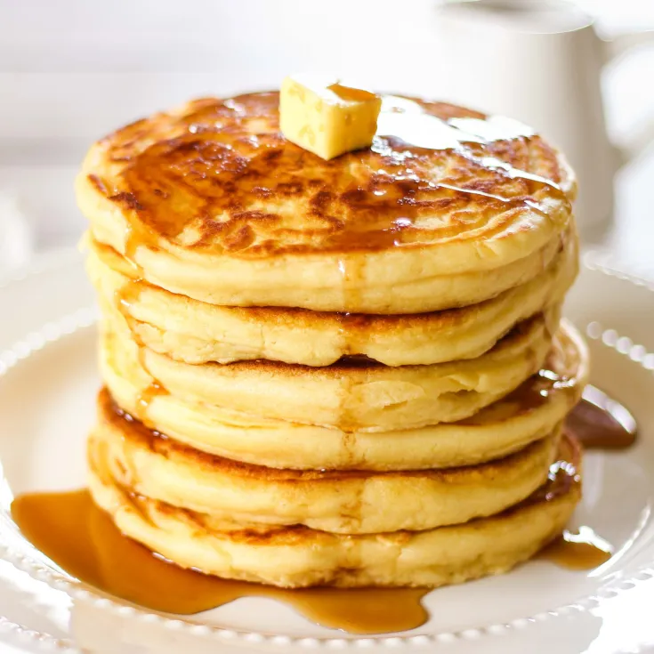

Pancakes

Final Pancake Picture
Ultimate Pancake Recipe
This Recipe provides the ultimate guide to a mouth watering pancake dish.
Ingredients:
- 2 tea spoons of salt
- 1 crate of egg
- 4 satchets of butter
- 9 spoons of sugar
- 30grams of milk
Steps
- Bake in preheated oven until puffy and brown, 20 to 30 minutes.
-
Set oven rack about 6 inches from the heat source and preheat the oven's
broiler.
- Spread bacon squares into a 9x13-inch baking dish.
- Cook bacon under preheated broiler until brown, 7 to 10 minutes.
- Preheat oven to 425 degrees F (220 degrees C).
-
Beat eggs, sugar, and salt together in a bowl; add milk and flour
alternately while mixing with a spoon to make a thin batter. Pour batter
into the hot baking dish with the bacon.
Home